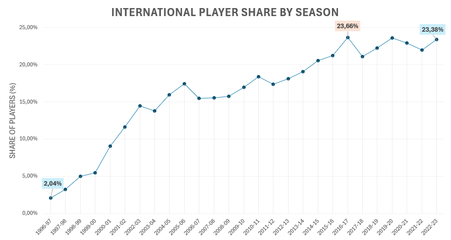

NBA Players Data Exploration
SQL Data Exploration Project
12,844 player records · 27 seasons · 1996-97 to 2022-23
Exploring NBA player data through SQL, with a focus on season leaders, first-round draft positions, and international growth.

Project Goal
The goal of this project was to demonstrate practical SQL skills by exploring NBA player data and answering structured analytical questions. The analysis focused on season leaders, first-round draft positions, and the long-term growth of international representation in the NBA across 27 seasons, from 1996-97 through 2022-23.
Technologies & Tools Used
SQL, Microsoft Excel, MySQL Workbench
SQL Skills:
- Data filtering with WHERE
- Aggregation with COUNT(), AVG(), MIN(), and MAX()
- Grouping and aggregated filtering with GROUP BY and HAVING
- Common Table Expressions
- Combining query results with LEFT JOIN and CROSS JOIN
- Window functions using RANK() and PARTITION BY
- Percentage calculations and player rankings
- Player-level identifier creation using DENSE_RANK()
Step by Step:
- Imported the source CSV file into a MySQL database using MySQL Workbench. The dataset contained 12,844 player records across 27 NBA seasons.
- Used the original CSV index as the primary key for individual records.
- Created a player-level identifier with DENSE_RANK() based on player name, college, and draft year.
- Explored the dataset by writing initial SQL queries to understand its structure, available fields, season range, and player records.
- Defined analytical questions focused on season leaders, first-round draft positions, and international representation.
- Wrote and organized SQL queries to answer each analytical question and identify meaningful patterns in the data.
- Reviewed the query results and selected the most relevant findings for the final analysis.
- Exported the SQL queries and selected results into separate files for clear project documentation.
- Created a summary of the analysis, documented the project in a README, and prepared the final materials for GitHub and the portfolio website.
SQL Analysis Overview
The final project was organized into four analytical areas:
Dataset Overview - dataset size, available seasons, and changes in the number of player records over time.
Season Leaders - players with the highest combined points, rebounds, and assists per game in each season.
Draft Position Analysis - average scoring performance across first-round draft positions.
International Player Growth - changes in the number and percentage of players recorded outside the USA across seasons.
Sample SQL Query
The following query calculates the share of international players in each NBA season.
WITH international_players AS (
SELECT
season,
COUNT(DISTINCT player_id) AS international_player_count
FROM nba_players
WHERE country <> 'USA'
GROUP BY season
),
total_players AS (
SELECT
season,
COUNT(DISTINCT player_id) AS total_player_count
FROM nba_players
GROUP BY season
)
SELECT
international_players.season,
international_players.international_player_count,
ROUND(
international_players.international_player_count * 100.0
/ total_players.total_player_count,
2
) AS international_player_percentage
FROM international_players
LEFT JOIN total_players
ON international_players.season = total_players.season
ORDER BY international_players.season;The query result was used to examine the long-term growth of international representation and create the chart presented below.
Player countries follow the classifications provided in the source dataset.
Insights / Findings
- International representation increased substantially.
Players recorded outside the USA represented 2.04% of player records in 1996-97 and 23.38% in 2022-23. The increase occurred across most of the analyzed period, indicating a clear long-term shift toward a more international league.
- International players represented nearly one-quarter of the league by 2022-23.
Their share reached 23.38%, compared with only 2.04% in the first analyzed season.
- The first overall draft position produced the highest scoring average among first-round positions.
Player-season records associated with the first overall pick averaged 16.46 points per game. However, scoring averages did not decline consistently with each subsequent draft position.
- Russell Westbrook recorded the highest season-leading combined average.
The combined points, rebounds, and assists average reached 52.7 per game in the 2016-17 season.

Analytical Value
- Shows how international representation changed across 27 NBA seasons.
- Highlights the long-term shift toward a more internationally represented league.
- Compares average scoring performance across first-round draft positions.
- Shows that scoring results did not decline consistently with every subsequent draft position.
- Identifies season leaders based on combined points, rebounds, and assists per game.
- Provides a structured example of using SQL to answer analytical questions and interpret query results.
Data Limitations
The dataset covers the 1996-97 through 2022-23 seasons and does not represent the complete history of the NBA.
Player statistics are recorded as season-level averages rather than individual game results.
Player countries follow the classifications provided in the source dataset.
A player-level identifier was generated from player name, college, and draft year during the original analysis.
College names were not standardized in the source data, so college-level results were excluded from the main findings.
Career-level rankings dependent on the generated identifier were also excluded from the main findings.
The analysis identifies patterns but does not establish causal relationships.